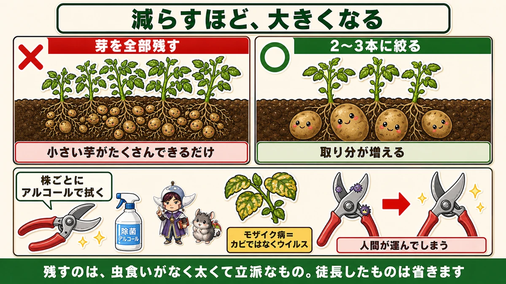
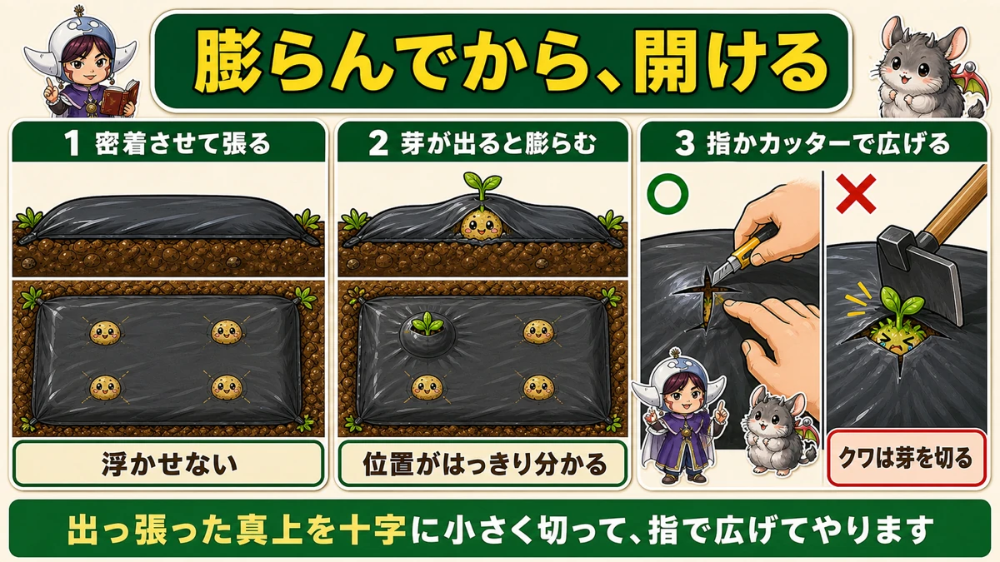
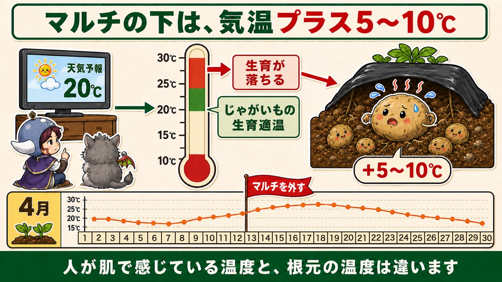
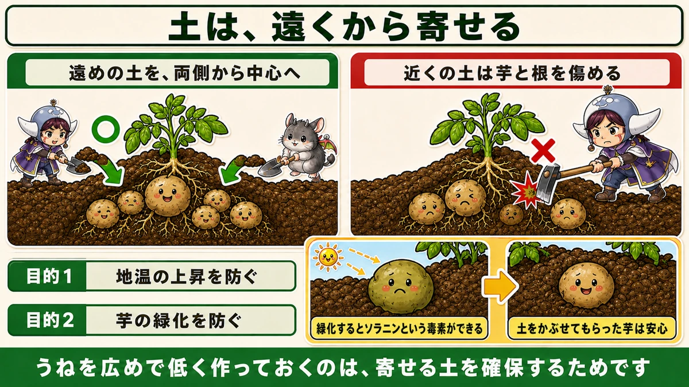

マルチの下は気温プラス10℃です🥔 4月中旬に外してください

🗨️「小さい芋ばかりで、大きいのが穫れない」
🗨️「マルチって、いつまで張っておくの？」
🗨️「掘ったら、緑色の芋が出てきた」
どうも、8150（えいこう）です🌱 家庭菜園歴8年、理科の教員免許を持っていて、有機・無農薬で野菜を育てています。
2月に植えたじゃがいもから、芽が出てきました。
ここから収穫まで、やることは3つだけです。芽かき、マルチを外すこと、そして土寄せ。
このうち、いちばん見落とされているのが真ん中です。
先に、この記事でいちばん言いたいことを言っておきます。
★黒マルチの下は、気温より5〜10℃高くなっています。
じゃがいもの生育適温は20〜25℃です。天気予報が20℃の日、マルチの下はもう30℃かもしれない。★だから、途中で外さないといけません☺️

①芽かき ── 減らすほど、大きくなる
全部残すと、こうなる
種芋を植えると、ひとつの芋から★何本も芽が出てきます。
たくさん出ると、うれしくなりますよね。全部育てたら、その分たくさん穫れそうな気がします。
逆です。
★芽をたくさん残すと、小さいじゃがいもがたくさんできるだけです。
種芋が持っている栄養と、根が吸える養分は決まっています。それを4本で分けるか、10本で分けるかの違いです。分ける相手が多いほど、1本あたりの取り分は減ります。
2〜3本に絞る
私は、勢いのある★2〜3本を残しています。
見分け方は簡単です。太くて、緑が濃くて、しっかり立っているもの。細くて色の薄いものは、そのまま置いても大きくなりません。
抜き方 ── ★親芋を傷つけない
やり方は2つあります。
慣れている人は、★手で茎を抜きます。株元を片手で押さえて、抜きたい芽をつまんで、横に倒すように引く。ぐらつかせなければ、すっと抜けます。
初心者の方は、★ハサミで切って構いません。私も最初の年はハサミでした。
どちらの場合も、★なるべく下のほうから作業してください。そして★下にある親芋（種芋）を傷つけないこと。ここに傷が入ると、そこから腐ります。
★★ハサミは、必ず除菌する
ここが、いちばん大事です。
じゃがいもには、★モザイク病という厄介な病気があります。葉がまだらに黄色くなって、生育が止まります。
そして重要なのは、★これがカビではなく、ウイルスだということです。
カビの病気なら、風通しをよくすれば防げます。でもウイルスは違います。★人間が運びます。
病気の株を切ったハサミで、次の株を切る。それだけで移ります。人間が媒介者になるわけです。
★ハサミは、株ごとにアルコールで拭いてください。
市販の消毒用アルコールで十分です。私はスプレーとキッチンペーパーを畑に持って行っています。ひと株ごとにシュッと吹いて拭く。数秒の作業です。
これをやらないと、健康な株に自分で病気を配って回ることになります。
アブラムシにも気をつける
もうひとつ、モザイク病を運ぶものがあります。★アブラムシです。
じゃがいもは、もともとアブラムシがつきやすい野菜ではありません。でも★ウイルスを運ぶという一点で、無視できません。
見つけたら落としてください。前にそら豆の話でお伝えした、筆で払って水で流す方法がそのまま使えます。
★追肥はしない
芋が小さいと、肥料をやりたくなります。
やらないでください。理由は2つあります。
- ★追肥をしても、急激な改善は期待できない
- ★有機栽培では、病気のリスクにつながる
じゃがいもは、もともとやせた土でよく穫れる野菜です。前にお話ししたとおり、★植えるときに肥料も石灰も入れていません。その延長で、途中でも入れません。
②マルチの扱い ── 張り方と、外し方
張るときは、地面に密着させる
黒マルチを張るときのコツがあります。
★土の表面に、ぴったり密着させて張ってください。
ふわっと浮かせて張ると、あとで困ります。密着させておくと、★芽が出てきたときにマルチが膨らんで、位置がはっきり分かるんです。

膨らんでから、穴を開ける
芽が伸びてくると、マルチが持ち上がって出っ張ってきます。★それを見てから、穴を開けます。
開けるのは、★小さなナイフかカッター、または指です。
★クワは使わないでください。マルチごと芽を切ってしまいます。私はこれで、一度に3本だめにしたことがあります。
出っ張った真上を、十字に小さく切る。そこから指で広げてやると、芽が自分で出てきます。
1〜2か月は、マルチで保温する
穴を開けたら、そのまま1〜2か月育てます。
2月から3月は、まだ寒い日が続きます。★マルチで地温を確保しておくと、生育がはっきり早まります。
ここまでは、マルチは味方です。
★★問題は、後半のマルチ
じゃがいもの生育適温は20〜25℃
ここから本題です。
じゃがいもが元気に育つ温度は、★20〜25℃です。
そして、★25℃を超えて30℃、35℃となってくると、生育が悪くなります。高温が続くと株そのものが弱って、病気にもかかりやすくなります。
★マルチの下は、気温より5〜10℃高い
ここが見落とされがちです。
黒い保温マルチは、★最低でも気温プラス5℃。気象条件によっては、★プラス8〜10℃になります。

つまり、こういうことが起きます。
- 天気予報「今日の最高気温は20℃」
- でもマルチの下は、25〜30℃
- じゃがいもの適温は、とっくに超えている
★人が肌で感じている温度と、根元の温度は違います。
春先は「まだ寒いな」と思っている日でも、黒いビニールの下は別世界になっています。
★4月中旬に外す
だから、★途中で外さないといけません。
目安は★4月中旬です。
過去の気温データを見ると、面白いことが分かります。★4月の中旬に一度、最高気温が25℃近くまで上がる。そして中旬から月末にかけて、一度また下がる。
この最初の山が来る前に外しておくと、ちょうどいいわけです。
外したあと、寒が戻ったら
外したあとで、極端に冷え込む日が来ることがあります。
そのときは、こうしてください。
- ★防虫ネットをかけて保温する
- ★株元にわらを敷く
どちらも、マルチほどは温度を上げません。★上げすぎない保温がちょうどいい時期になっている、ということです。
③土寄せ ── 遠くの土を使う
うねは「広めで低く」作っておく
土寄せをする前提なら、植えるときのうねの形が変わります。
★広めで、低く作ります。
高いかまぼこ型のうねにしてしまうと、あとで寄せる土がありません。低く作って、あとから足していく。
そして★うねの両側の土も、やわらかく耕しておいてください。これが後で寄せる土になります。かたいままだと、寄せられません。
手順
マルチを外したら、土寄せをします。
- うねの★外側から、株の中心に向かって寄せる
- ★両側から寄せる
- クワかシャベルを使う

★近くの土を使ってはいけない
ここが大事なところです。
★株のすぐそばの土を寄せると、芋や根を傷めます。
じゃがいもは、株の周りの浅いところに芋をつけます。そこにクワを入れると、育っている芋に直接刃が当たります。
だから★遠めの土を使う。うねを広く作っておく理由は、これです。
土寄せの目的は2つ
なぜ土を寄せるのか。実は2つあります。
★1. 地温の上昇を防ぐ
これが第一の目的です。土の層が厚くなるほど、地面の下は温度が変わりにくくなります。マルチを外すのと同じ理由で、★根元を涼しく保つためです。
★2. 芋の緑化を防ぐ
こちらは副次的な効果ですが、大事です。
じゃがいもは育つと、土の表面近くまで芋が出てきます。★日に当たると、緑色になります。
緑色になった部分には、★ソラニンという毒素ができます。芽にも同じものが含まれていて、これが「じゃがいもの芽は取る」と言われる理由です。
★土をかぶせておけば、光が当たりません。確実に防げます。
浅く植えた人は、とくに注意
種芋を浅く植えた場合、芋が土の外へ出やすくなります。
見回っていて★芋の頭が見えていたら、そこだけでも土をかぶせてください。わらを敷くだけでも効きます。
緑になった芋は、その部分を厚くむけば食べられますが、正直もったいないです。★見つけたときに土をかける、これだけで防げます。
3月から6月までの流れ
この記事の要点
- ★芽を全部残すと、小さい芋がたくさんできるだけ。★2〜3本に絞る
- 太くて緑が濃く、しっかり立っている芽を残す
- 抜き方は手でもハサミでもよい。★なるべく下から、親芋を傷つけない
- ★★ハサミは株ごとにアルコールで除菌する
- 理由＝★モザイク病はカビではなくウイルス。★人間がハサミで運んでしまう
- ★アブラムシもモザイク病を運ぶ。じゃがいもにつきにくくても油断しない
- ★追肥はしない。改善しないうえ、有機では病気のリスクになる
- マルチは★地面に密着させて張る（芽が出ると膨らんで分かる）
- 穴あけは★小さなナイフ・カッターか指で。★クワは芽を切る
- ★じゃがいもの生育適温は20〜25℃。30℃を超えると生育が落ちる
- ★★黒マルチの下は気温＋5℃、条件によっては＋8〜10℃
- ★マルチを外す目安は4月中旬（そのころ最高気温が25℃近くまで上がる）
- 外したあと冷えたら★防虫ネットか、株元にわら
- うねは★広めで低く。両側の土もやわらかく耕しておく
- 土寄せは★外側から両側から中心へ。★近くの土は芋と根を傷めるので遠めの土を
- 土寄せの目的＝★地温の上昇を防ぐ（第一）と★芋の緑化を防ぐ（副次）
- 緑化した部分には★ソラニンという毒素ができる
全部やろうとしなくて大丈夫です。まずはカレンダーの4月中旬に「マルチを外す」とだけ書いてください。この1行があるかないかで、6月の収穫が変わります🥔
次回は、苗づくりの続きです。芽が出たあと、ひょろひょろにさせないためのコツをお話しします🌱
ここまで読んでくださって、ありがとうございました。
収穫ハサミ
芽かきに使います。慣れれば手で抜けますが、初心者はハサミで構いません。ただし株ごとにアルコールで除菌してください。モザイク病はカビではなくウイルスなので、ハサミが次の株へ運んでしまいます。
![[商品価格に関しましては、リンクが作成された時点と現時点で情報が変更されている場合がございます。]](https://hbb.afl.rakuten.co.jp/hgb/56d22030.def85fa7.56d22031.b89fde86/?me_id=1250472&item_id=10022339&pc=https%3A%2F%2Fthumbnail.image.rakuten.co.jp%2F%400_mall%2Fplantz%2Fcabinet%2F01%2Ft-13.jpg%3F_ex%3D240x240&s=240x240&t=picttext "[商品価格に関しましては、リンクが作成された時点と現時点で情報が変更されている場合がございます。]")

穴あき黒マルチ
地面に密着させて張ってください。芽が出るとマルチが膨らんで位置が分かります。穴の間隔は15cmなので、じゃがいもの株間30cmに合わせて1つ飛ばしで。ただし4月中旬には外してください。下は気温プラス5〜10℃です。
![[商品価格に関しましては、リンクが作成された時点と現時点で情報が変更されている場合がございます。]](https://hbb.afl.rakuten.co.jp/hgb/56e76ac2.3cefe106.56e76ac3.fbdc1a1b/?me_id=1202225&item_id=10004912&pc=https%3A%2F%2Fthumbnail.image.rakuten.co.jp%2F%400_mall%2Fnetonya%2Fcabinet%2F01483860%2Fimg57579178.gif%3F_ex%3D240x240&s=240x240&t=picttext "[商品価格に関しましては、リンクが作成された時点と現時点で情報が変更されている場合がございます。]")
敷きわら
マルチを外したあとの保温と、芋の緑化防止に使います。土から頭を出した芋が日に当たると緑色になり、ソラニンという毒素ができます。わらをかけておけば光が当たりません。マルチほど温度を上げないのが、この時期にはちょうどいい。
![[商品価格に関しましては、リンクが作成された時点と現時点で情報が変更されている場合がございます。]](https://hbb.afl.rakuten.co.jp/hgb/56bc2fb2.ff40a6e6.56bc2fb3.618f6a70/?me_id=1257026&item_id=10000211&pc=https%3A%2F%2Fthumbnail.image.rakuten.co.jp%2F%400_mall%2Fsharuka%2Fcabinet%2F09042254%2Fimgrc0081094692.jpg%3F_ex%3D240x240&s=240x240&t=picttext "[商品価格に関しましては、リンクが作成された時点と現時点で情報が変更されている場合がございます。]")
防虫ネット
4月中旬にマルチを外したあと、寒が戻ったときの保温用です。マルチほど温度を上げないので、上げすぎない保温がちょうどよくなる時期に向いています。アブラムシ対策にもなります。
![[商品価格に関しましては、リンクが作成された時点と現時点で情報が変更されている場合がございます。]](https://hbb.afl.rakuten.co.jp/hgb/56bc205d.0066fedc.56bc205e.af56d163/?me_id=1260467&item_id=10000299&pc=https%3A%2F%2Fthumbnail.image.rakuten.co.jp%2F%400_mall%2Fmarsol-morishita%2Fcabinet%2Fshouhinn%2Fbouchuu%2Fimgrc0090950099.jpg%3F_ex%3D240x240&s=240x240&t=picttext "[商品価格に関しましては、リンクが作成された時点と現時点で情報が変更されている場合がございます。]")
あわせて読みたい